Aceh merupakan wilayah strategis di ujung utara Pulau Sumatra yang berbatasan langsung dengan Samudra Hindia. Berada di dekat zona subduksi aktif, wilayah ini memiliki karakteristik spasial yang unik sekaligus menantang dalam konteks kebencanaan.
Berbatasan langsung dengan Samudra Hindia dan Selat Malaka, menjadikannya gerbang maritim utama di barat Indonesia.
Pertemuan Lempeng Indo-Australia dan Eurasia (Segmen Aceh–Andaman) yang aktif mengumpulkan energi tektonik besar.
Kawasan pantai yang cenderung rendah and padat penduduk, meningkatkan eskalasi risiko paparan gelombang tsunami.
Frontline Sumatra Utara
Kawasan Prioritas Mitigasi Bencana Nasional.Data statistik di bawah ini menunjukkan skala dampak dari peristiwa megathrust yang membentuk urgensi sistem mitigasi Aceh Wave Insight saat ini.
Magnitudo (Mw)
Korban Jiwa (Indonesia)
Tinggi Gelombang Maksimum
Deformasi dasar laut di segmen Aceh–Andaman menyebabkan perpindahan volume air laut yang masif dalam waktu kurang dari 30 menit.
Wilayah pesisir Banda Aceh dan Aceh Besar mengalami kerusakan total hingga radius beberapa kilometer dari garis pantai.
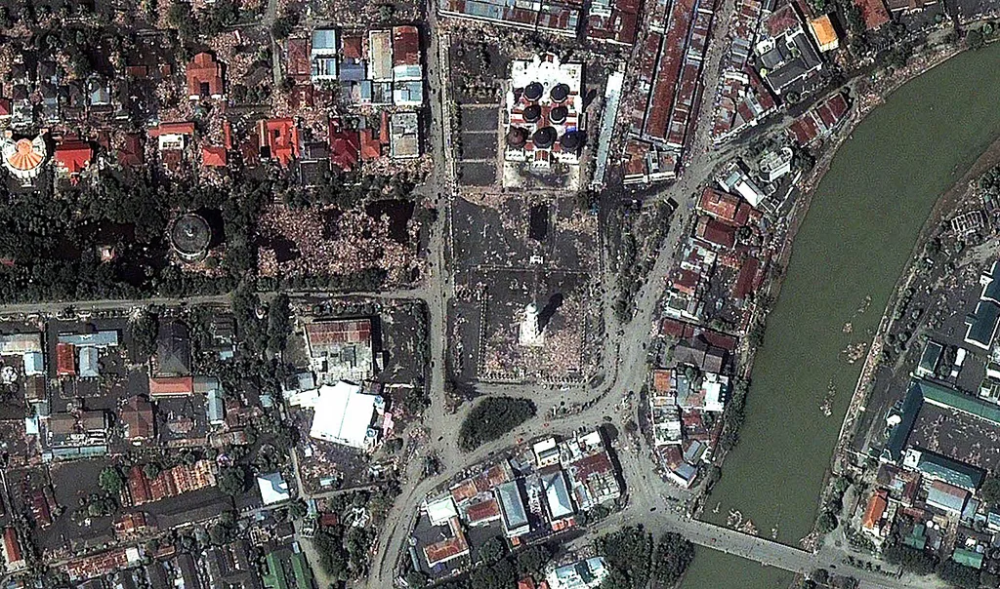
Gempa dangkal dengan durasi sekitar 8-10 menit yang meruntuhkan bangunan di Banda Aceh.
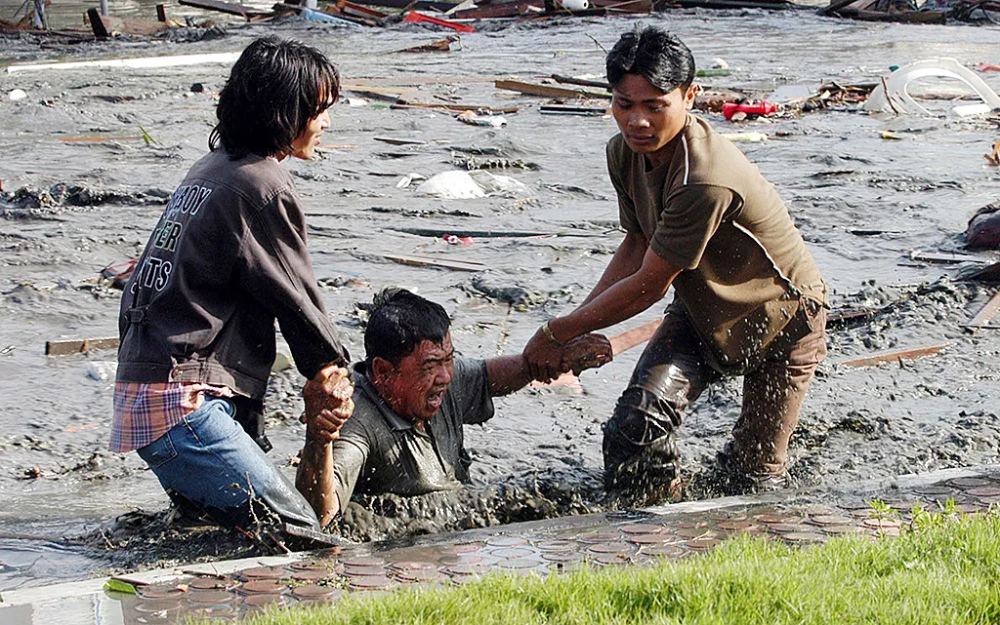
Air laut surut sesaat sebelum gelombang hitam pekat membawa material menghantam daratan.
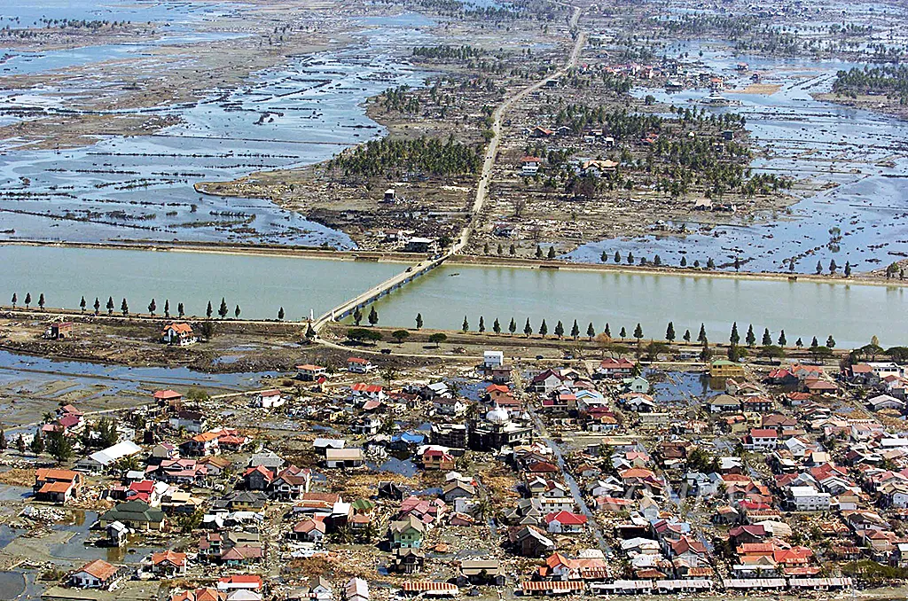
Akses komunikasi terputus total, mengubah wajah pesisir Aceh dalam hitungan jam.
Gunakan fitur zoom dan geser untuk memetakan rute evakuasi mandiri secara presisi.
Visualisasi interaktif mengenai zona kerawanan tsunami dan lokasi titik evakuasi di wilayah Banda Aceh untuk mendukung mitigasi bencana.
Daftar lengkap titik penyelamatan berdasarkan analisis geospasial mitigasi bencana tsunami 9 SR.
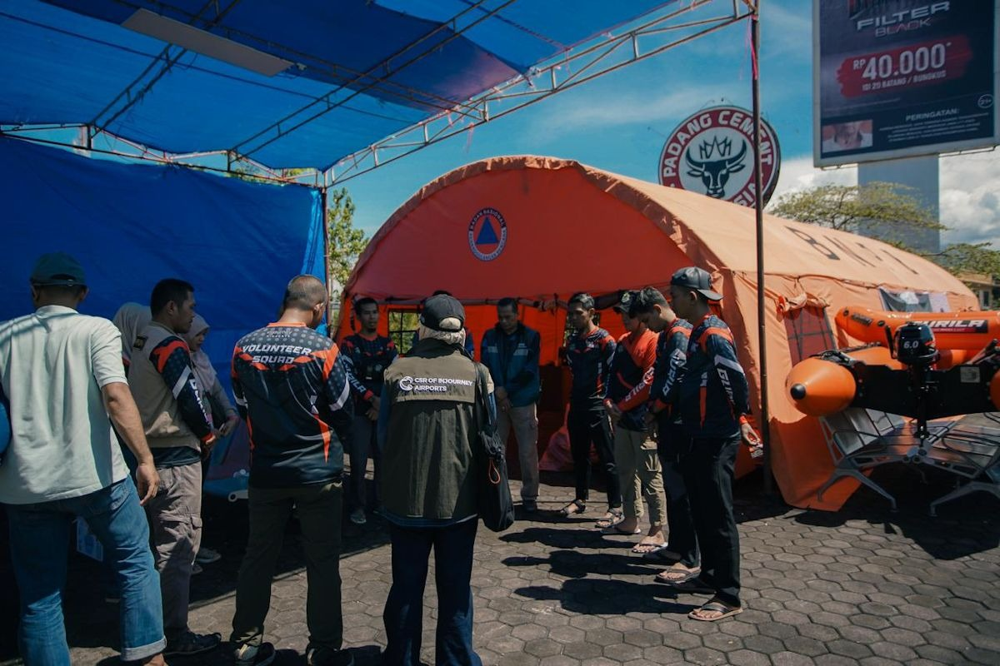
Geografis & Sejarah: Terletak di dataran tinggi bagian selatan, menjadikannya zona aman mutlak dari terjangan air. Sering digunakan sebagai basis bantuan logistik sekunder.
Geografis & Sejarah: Berada di komplek universitas tertua di Aceh. Memanfaatkan gedung teknik bertingkat sebagai tempat evakuasi vertikal (*Vertical Rescue*) masyarakat sektor timur.
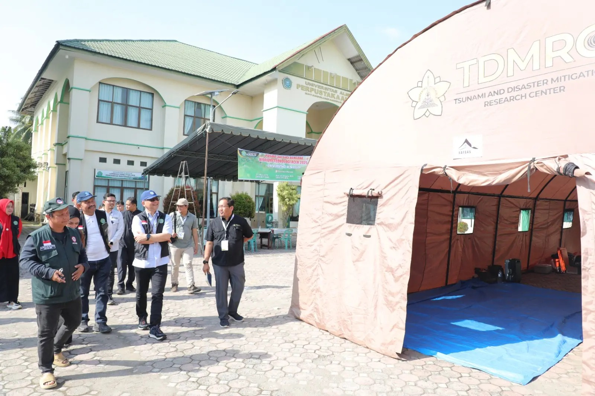
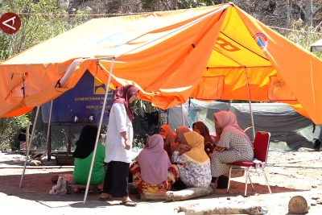
Geografis & Sejarah: Titik topografi tinggi ideal untuk pengungsian massal jangka panjang karena elevasinya bebas banjir tsunami dan memiliki ruang terbuka luas.
Geografis & Sejarah: Dirancang khusus pasca bencana 2004 sebagai monumen ingatan sekaligus difungsikan sebagai gedung penyelamatan darurat vertikal (*Escape Building*).
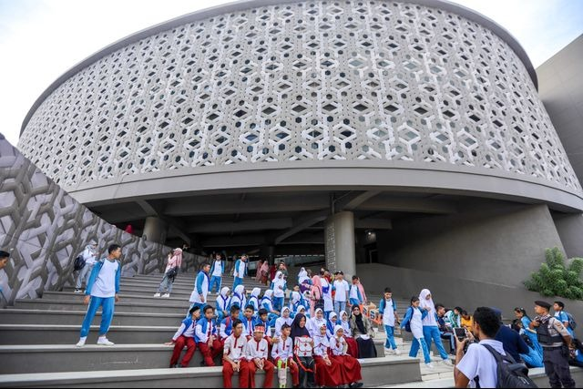
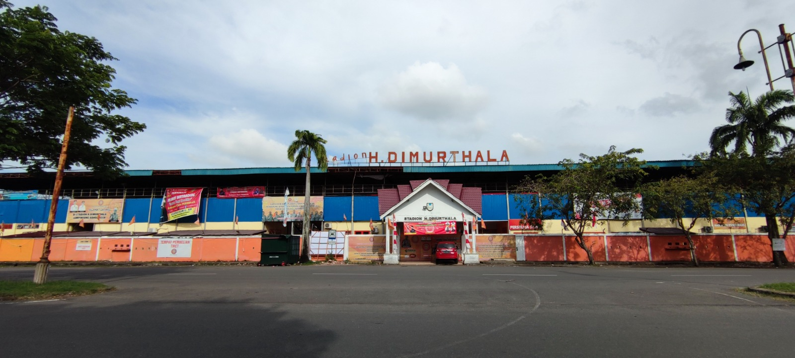
Geografis & Sejarah: Area publik strategis di wilayah Lampineung. Memiliki tribun beton tinggi dan lapangan terbuka lebar untuk pendirian tenda darurat pengungsi.
Geografis & Sejarah: Komplek peninggalan sejarah pertahanan administrasi kota. Digunakan sebagai pusat komando taktis penanggulangan bencana dan SAR udara.
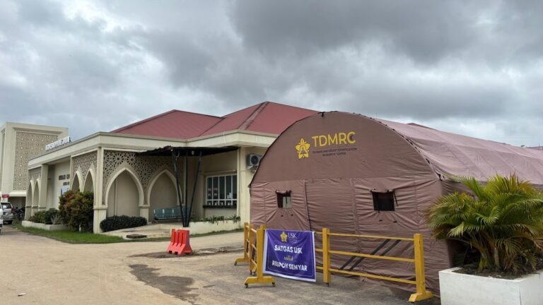
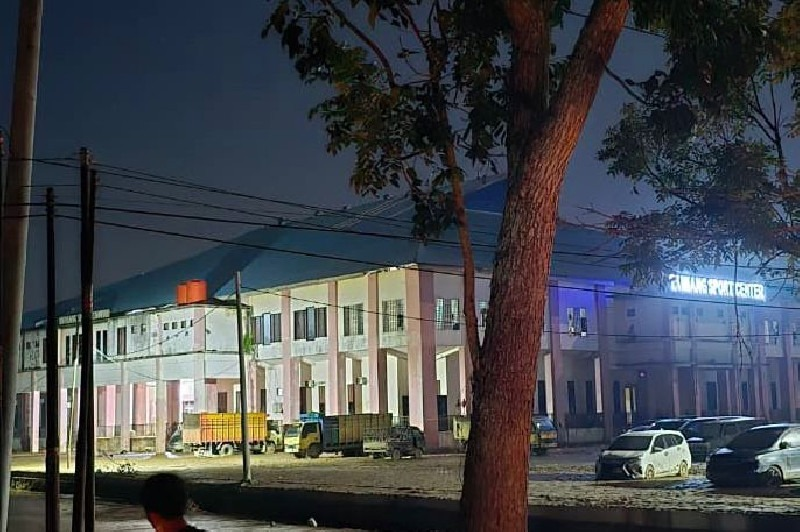
Geografis & Sejarah: Terletak di Kopelma Darussalam. Memiliki kapasitas auditorium besar serta sistem penyediaan air bersih mandiri untuk kebutuhan pengungsi.
Geografis & Sejarah: Titik simpul transportasi gerbang masuk kota. Berfungsi sebagai posko utama distribusi bantuan regional yang datang dari luar wilayah kota.
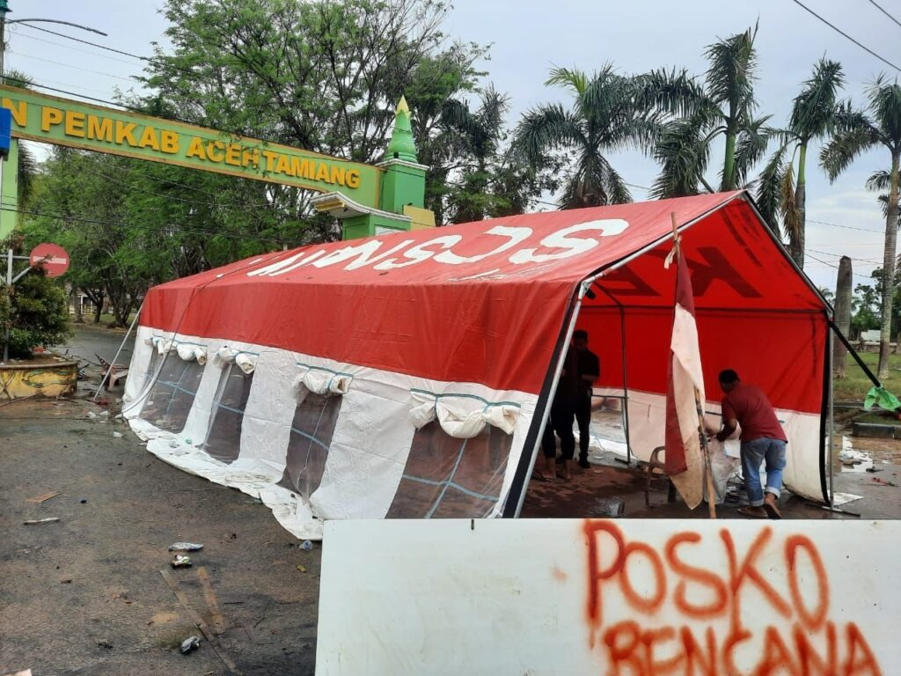
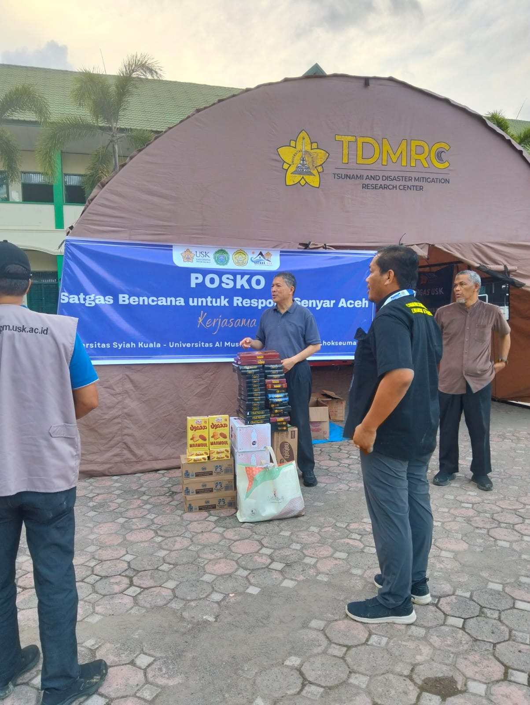
Geografis & Sejarah: Menyediakan kapasitas penampungan darurat berbasis zonasi pemukiman lokal guna mengurai kepadatan penampungan pada titik universitas utama.
Geografis & Sejarah: Struktur bersejarah yang kokoh berdiri saat diterjang tsunami 2004. Lantai atas bangunan dan koridor luar menjadi andalan utama evakuasi darurat pusat kota.
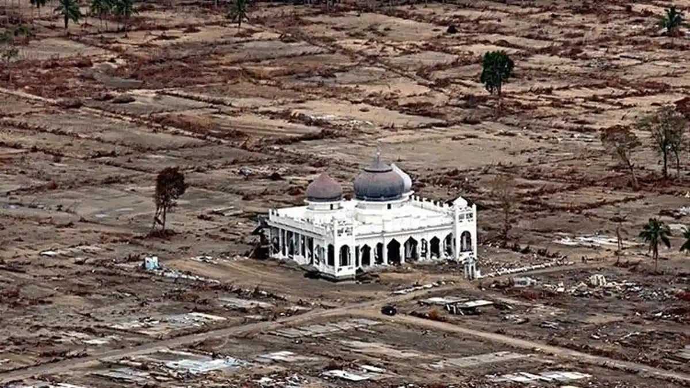
Panduan kesiapsiagaan menghadapi ancaman megathrust dan tsunami skala besar di wilayah pesisir Banda Aceh.